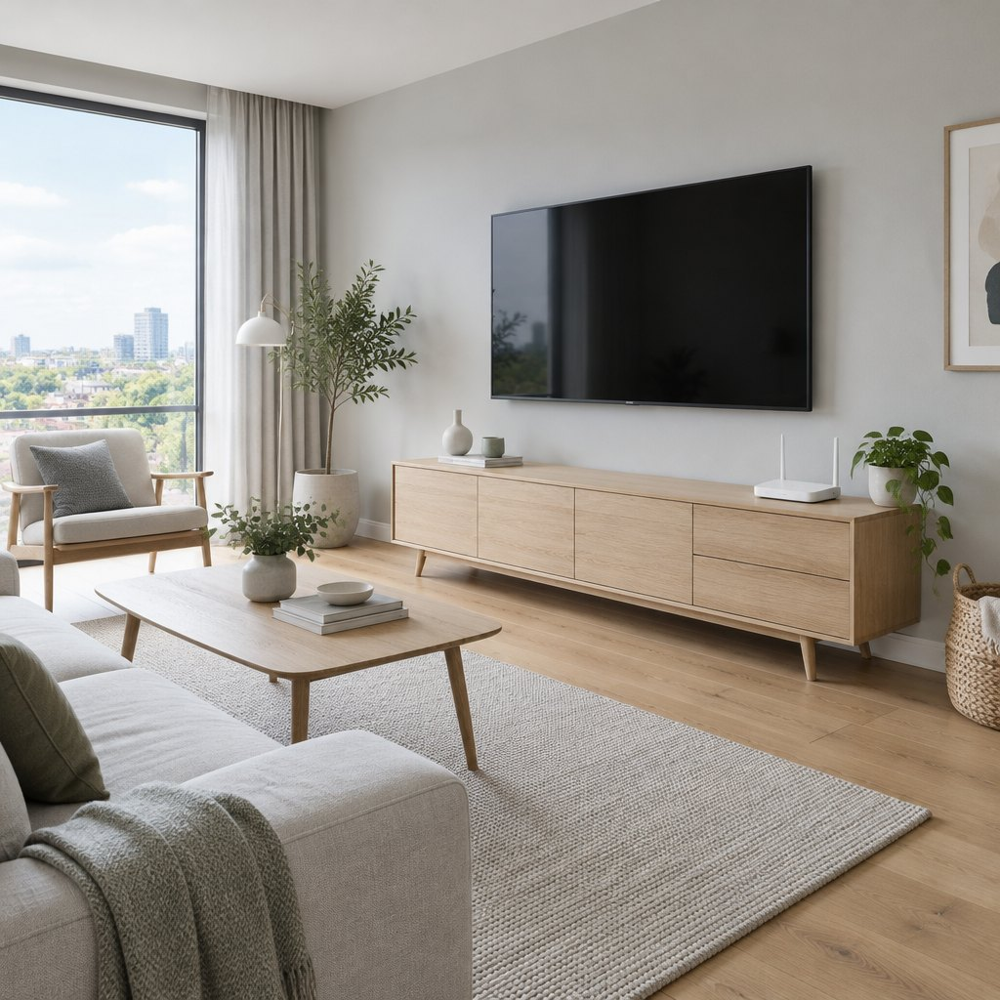
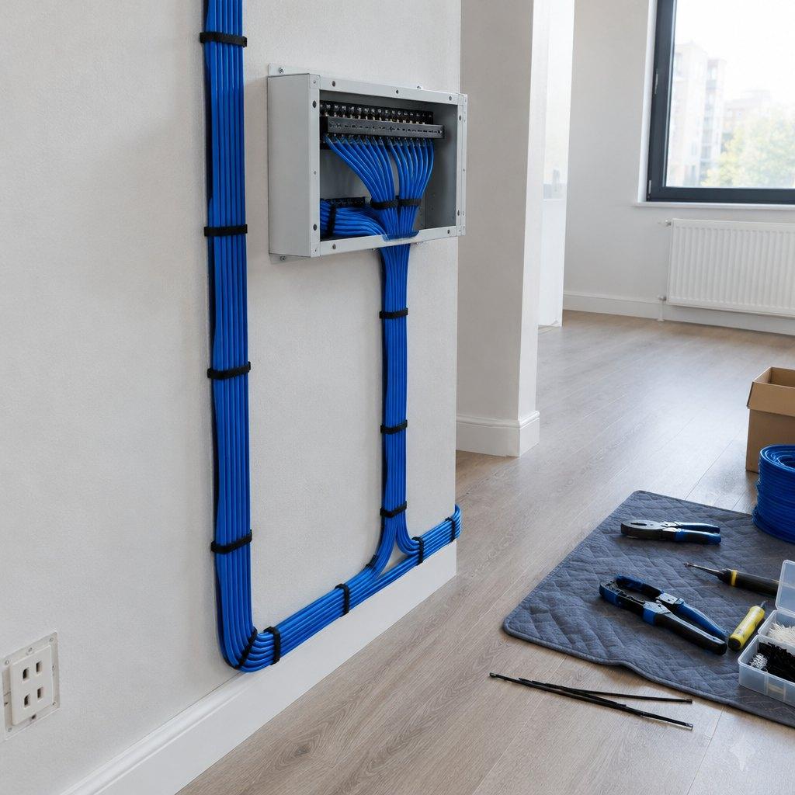
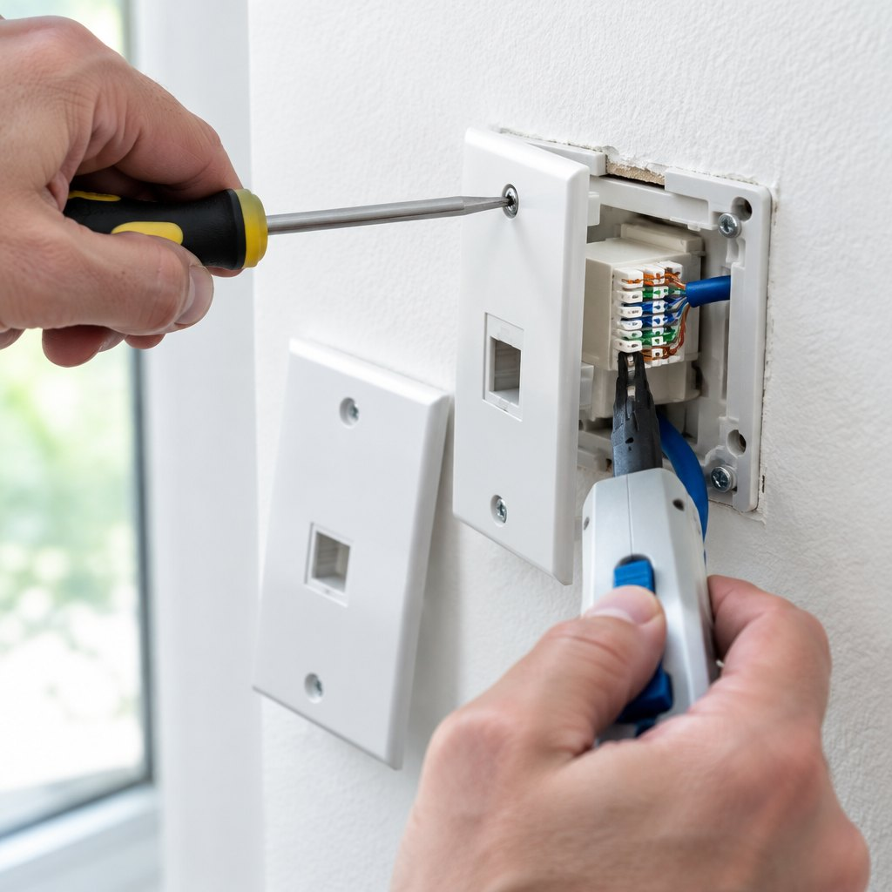
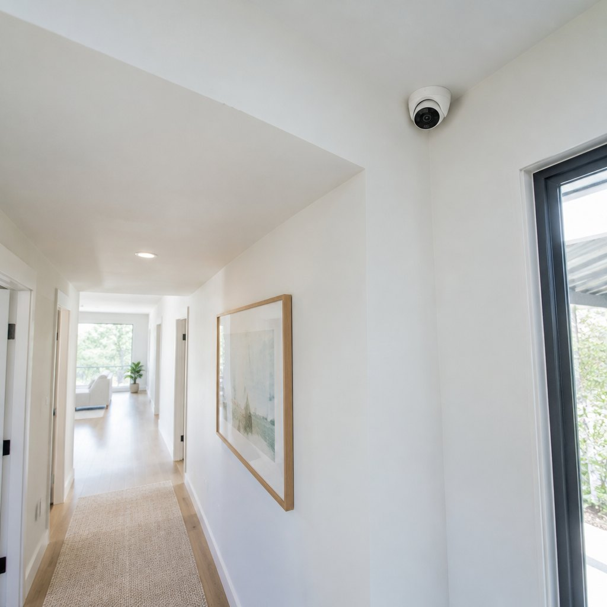

Усиление сигнала Wi-Fi
Замер по комнатам, перенос роутера, настройка каналов и мощности. Там, где сигнала не было, он появляется.

Настраиваю интернет, усиливаю сигнал Wi-Fi, прокладываю кабель и интернет-розетки, подключаю телевизор, Smart TV и IPTV, ставлю камеры. Большой опыт работы в связи и интернете.
Выберите свою ситуацию — покажу вероятную причину и что с этим делаю. Без лекций про роутеры.
От одной розетки до сети в целом доме. Всё, что связано с интернетом, Wi-Fi, ТВ и мелкой электрикой.
Замер по комнатам, перенос роутера, настройка каналов и мощности. Там, где сигнала не было, он появляется.
Mesh-системы и проводные точки: одно имя сети, устройства переключаются сами, без «мёртвых» зон.
Провайдер, тариф, стабильность, родительский контроль, гостевой Wi-Fi, проброс портов для камер.
Прокладка кабеля по квартире, установка и расключение розеток RJ-45, аккуратные трассы.
Установка и настройка ТВ, приставки, Smart TV, IPTV с 1500+ каналами, прошивка телевизора.
Установка и настройка видеокамер, удалённый просмотр, умные розетки, свет, датчики.
Обычно один визит, иногда два: сначала диагностика, потом монтаж.
Описываете квартиру, провайдера и что не работает. Сразу говорю, реально ли решить удалённо.
10 минутПроверяю уровень сигнала в комнатах, скорость по кабелю и Wi-Fi, состояние роутера и проводки.
20–30 минутГоворю, что нужно сделать и сколько это стоит. Без «сначала заплатите, потом посмотрим».
до работНастройка, монтаж точек, прокладка кабеля, установка розеток, ТВ и камер.
в тот же деньПоказываю результат: скорость, покрытие, работу ТВ и камер. Объясняю, что делать дальше.
на местеТипичная картина в брестской квартире: у роутера всё отлично, в спальне и на лоджии — почти ничего. Решается не «усилителем за 30 рублей», а точкой в нужном месте и кабелем.
Связь — это профессия, а не подработка. Отсюда и подход.
Много лет работы в сфере связи и интернета: знаю, как ведут себя провайдеры, оборудование и стены.
Не «настройте по телефону», а смотрю на месте: розетки, трассы, планировку и материалы стен.
Без терминов, если они не нужны. Показываю, что и зачем сделано, чтобы вы могли повторить.
Кабель по плинтусу или в кабель-канале, розетки ровно, после работы — чисто.
Реальные задачи: гостиная с ТВ, аккуратная разводка, розетки, камеры.



Если не нашли свой вопрос — напишите в WhatsApp, отвечу по вашей ситуации.
Зависит от задачи: настройка роутера — это одно, разводка кабеля по квартире — другое. Скажу цену после короткого описания или на замере, до начала работ.
Часто да: перенос, настройка каналов и мощности, вторая точка. Если роутер старый и не тянет тариф — скажу прямо.
Да, по плинтусу или в кабель-канале, аккуратно и без штробления, если это возможно. Скрытые трассы — на этапе ремонта.
Да: установка, настройка Smart TV, IPTV (1500+ каналов), приставки, прошивка ТВ, если он «завис» или не подключается.
Брест и область. Уточните адрес при заявке — скажу, приеду ли и когда.
Опишите квартиру или дом, провайдера и проблему. Скажу, что можно сделать и сколько это будет стоить.